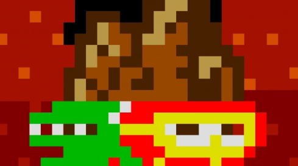
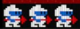

Dig Dug
Overview
Dig Dug is a classic arcade game where your goal is to eliminate enemies by either inflating them until they explode or by dropping rocks on them. The game is set in a maze-like underground world, and you must dig tunnels to reach your enemies and avoid getting caught. It's a test of strategy and timing as you navigate through the underground maze.

How to Play
- To start the game, press Right Shift to go to the select screen/insert a quarter.
- Press Enter to start a one player game.
- As you play, use the arrow keys to move your character around the screen.
- Press the S key to inflate and pop the monsters.
- Your goal is to defeat the monsters in each level while avoiding getting caught by them. The more monsters you defeat, the higher your score!
- As you inflate monsters, be careful of the other enemies around you. If you're not quick enough, the monsters can still defeat you.
- By dropping rocks on them, you can defeat enemies as well.

- Each level has a set of monsters, and you need to clear them to progress to the next level. Watch out for the larger enemies that will require you to inflate them multiple times to defeat.
- If you get caught by a monster, you'll lose a life. Keep an eye on your remaining lives at the bottom left of the screen.

- Continue playing until all your lives are lost and try to get the highest score. The more levels you progress, the more challenging the game becomes!